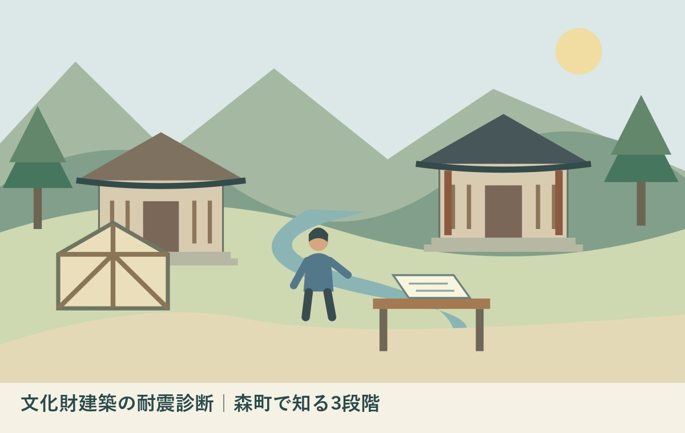
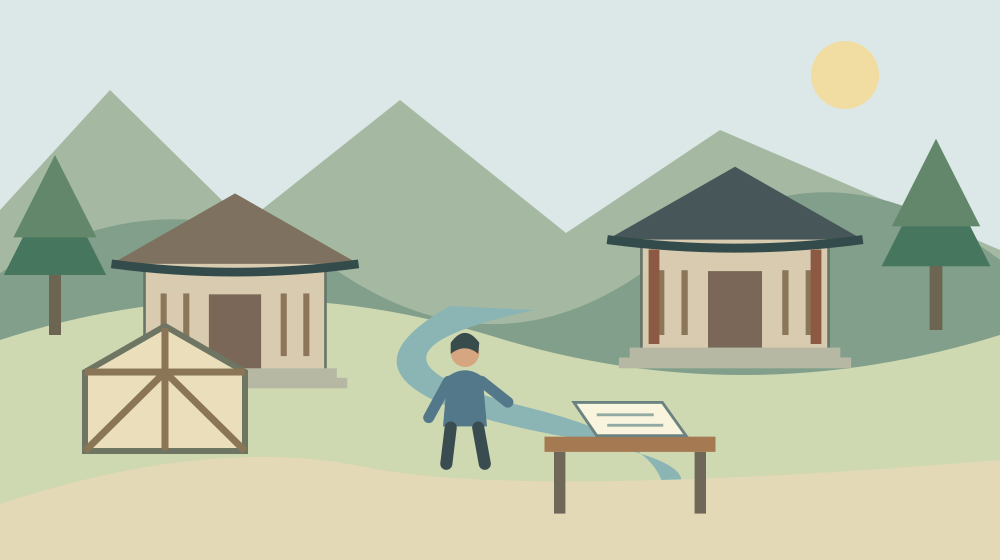
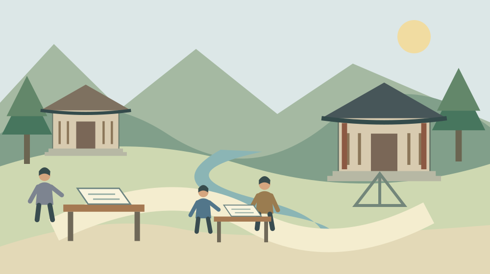

文化財建築の耐震診断｜森町で知る3段階
／ ／ 社寺・文化財・建築

Q：文化財の耐震確認は、どこから始めればよいですか？
A：文化庁の2012年改正指針では、文化財建築の耐震診断は予備・基礎・専門の3段階です。所有者が課題を把握し、必要に応じて専門家へつなぎます。森町の個別建物の耐震性は本記事では判定できません。今日は診断・修理記録の所在と作成年を確認するところから始めてください。
耐震診断の3段階は、予備・基礎・専門
文化財建築の耐震診断は、建物の古さだけで安全を決める作業ではありません。文化庁の2012年6月21日改正「重要文化財（建造物）耐震診断指針」は、耐震予備診断、耐震基礎診断、耐震専門診断という3段階を示しています。この記事の資料確認日は2026年10月21日です。
森町では、社寺や古い民家を日々見守ってきた方がいます。修理の判断、清掃、鍵の管理、記録の保管。その積み重ねに敬意を持ちながら、安全確認を誰が引き継ぐかを考えたいと思います。私は大石浩之（磐田市／不動産業）です。診断そのものを行う立場ではありません。
今回調べ直すと、文化庁サイトには1999年4月8日の通知本文も残っていました。古い通知は最初の段階を「所有者診断」と呼んでいます。一方、改正版は「耐震予備診断」です。同じ公式サイトでも、読む資料の版をそろえる必要がある点は、意外に見落としやすいところです。
私は、診断書を探すことと建物の安全を判定することを分けます。家族ができる資料整理と、建築の専門家が担う判断は同じ仕事ではありません。今日は補強工事の結論を出す日ではなく、どんな記録がどこにあるかを明らかにする日、と置いてもよいと思います。
森町の文化財は、指定区分と建物を分けて確認する
森町公式の「文化財」ページは、友田家住宅を国指定文化財の建造物として掲載しています。天宮神社本殿及び拝殿は県指定の欄にあります。社寺や古民家という呼び方が同じでも、指定の区分と対象となる建物を確かめてから資料を選ぶ必要があります。
同ページの指定一覧は、2001年の町の統計資料を出典としています。ここでは対象の名称や指定記録を知る入口として使います。2026年の各建物の診断や補強の実施状況を示す表ではありません。掲載されていること自体を、安全性の確認済みという意味に読み替えないでください。
森町公式「図説森町史」の神社建築の章には、本殿が覆い屋に納められる例や、建築形式の説明があります。外から見える屋根や壁だけで、文化財としての対象や構造の全体が分かるとは限りません。見学者の目で得た印象と、診断の材料は区別したいところです。
私は、建物名だけの相談より、対象を示す資料を一枚添えた相談の方が話を始めやすいと考えます。敷地全体なのか、本殿なのか、拝殿なのか。名称が曖昧なまま「耐震は大丈夫か」と聞いても、答える範囲が定まりません。分からない場合は、その点を最初の質問にします。

予備診断は、所有者が課題を把握する入口
文化庁の改正版指針では、耐震予備診断は立地環境、構造特性、保存状況について課題を把握する段階です。所有者等が自ら実施に努め、必要に応じて市町村教育委員会の協力を得るとしています。見た目から安全を保証するための呼び名ではありません。
私は、記録を探す段階で、屋根裏へ上がる、床下へ潜る、部材を外すといった行為まで家族に勧めません。危険な場所へ入らずに、既存の図面や修理報告書を集めることから始めます。調査に必要な立入りの方法は、管理者と専門家の判断につなぐ領域です。
手元の書類には、表紙の名称、作成年、作成者、対象建物を書き添えると整理できます。古い「所有者診断」の記録があれば、捨てずに残します。その記録が現在の相談でどこまで使えるかは、版の違いも含めて確認します。古い名称だから無価値、と即断する必要はありません。
資料が見つからない場合も、未実施とは断定できません。別の管理者、過去の担当者、修理を担当した専門家が保管している可能性は残ります。私は、まず「自宅には見当たらない」と範囲を限定して記録する方法を提案します。未確認を、存在しないという結論に変えないためです。
基礎診断と専門診断は、必要に応じて専門家へつなぐ
耐震基礎診断は、予備診断等を受けて必要性が認められた場合に行う段階です。文化庁指針では、都道府県教育委員会の指導助言を得て、所有者等が適切な専門家へ依頼します。主に外形的な観察や既存資料に基づき、必要な耐震性能を満たすかを判断します。
耐震専門診断は、基礎診断等から必要と認められた場合に、部位の仕様などの詳細な資料を基に行う段階です。修理等の機会に得られる情報も使います。「専門」と付くから最初から全建物で同じ調査を一斉にする、という流れではありません。
私は、依頼前の質問を「いくらで全部終わるか」だけにしない方がよいと考えます。今回の相談は診断段階の整理なのか、現地確認なのか、補強設計まで含むのか。仕事の範囲をそろえずに金額だけを比較すると、後から必要な作業の違いに気付くことになります。
見積りを受けたら、対象建物、調査の範囲、成果物、追加調査の扱いを確かめます。これは私からの準備の提案であり、全国一律の料金表ではありません。森町の各文化財について必要な診断費や補助の適用を、この記事から計算することはできません。
良い点｜所有者が全部を抱え込まない道筋がある
文化庁指針の良い点は、所有者による課題の把握から、必要な専門家の判断へ進む道筋を示していることです。建物を守る人がすべての構造計算を行うという仕組みではありません。資料や現地の状況を、判断できる人へ渡す役割があります。
私は、小さな地域で管理者が交代するときにも、この役割の分け方が役立つと考えます。建物を長く知る方の記憶は貴重です。しかし、その方がいなければ何も分からない形は負担が重い。修理した年や資料の置き場所を残せば、専門家へ伝える仕事を次の人も担えます。
改正版指針は、診断後の対処について、管理や活用方法の改善、健全性の回復、耐震性能の向上などを示しています。診断結果を受け取った後に、使い方も含めて考える流れです。補強の工事名だけで話を終えない構成になっています。
建物の値打ちと維持の負担を分ける考え方は、友田家住宅から古い家の価値と費用を考えた記事にもつながります。古さを否定するための確認ではなく、残す判断を具体化するための確認として位置づけたいと思います。
注文したい点｜資料の版と、次の相談先を明確にしたい
文化財建築の診断資料は、古い通知と改正版の本文が別々に公開されています。名称が違う資料を見た所有者が迷わないよう、版と次の相談先が一緒に分かる案内が欲しいと私は考えます。新しい専門用語を増やすより、今持っている記録の位置づけを説明してほしいのです。
私は、一般の古民家を持つ方が文化財向けの指針を見つけた場合も気になります。改正版の適用対象は重要文化財の建造物です。登録有形文化財などへの記述もありますが、一般住宅の診断とそのまま同じ条件ではありません。建物の区分を飛ばした案内は避けたいところです。
どこまで簡単な案内にすれば専門的な違いを失わずに済むか、私にも迷いがあります。説明を短くしすぎれば、家族だけで安全判定できるように読まれるおそれがあるからです。この記事は、建物の安全評価ではなく、資料整理と相談の入口までに範囲を絞ります。
文化財の指定や登録を考えている場合は、登録有形文化財と古民家の条件を扱った記事も参照できます。ただし、登録を検討することと耐震確認を済ませることは別です。どちらか一方の手続きで両方が終わるとは考えないでください。
対案・結論｜今日探すのは、一冊の診断・修理記録
文化財建築の耐震確認で今日できる一歩は、診断書か修理記録の保管場所を一つ確かめることです。見つかった書類の表紙と作成年を記録します。見つからなければ、どの場所を探したかと、次に誰へ聞くかを残します。安全を自己判定する作業には進みません。
私は、家族内で資料を探す役と、管理者へ連絡する役を決めることを提案します。複数人が別々に問い合わせると、回答の時点や対象が混ざります。最初の窓口を一人にして、受け取った情報を共有する方が、相手の説明も家族の判断もそろいやすくなります。
相談メモには、建物名、所在地、指定区分、所有者・管理者、資料の有無を書きます。指定区分が不明なら不明と記します。質問は「現在の資料で次に必要な確認は何か」に絞ると、工事を頼むかどうかを決める前でも、話を始める材料になります。
地震だけでなく火災への備えも整理したい場合は、文化財の防火に関する記事へ分けて進めます。防火設備があることと耐震性が確認されていることは、別の確認事項です。記録の欄も別にしておくと、引継ぎの取り違えを減らせます。

家族に残す建物記録は、土地の資料と分けて束ねる
文化財建築の資料を引き継ぐときは、建物の診断・修理記録と、土地の名義や境界の資料を区別します。所在地が同じでも、説明している対象は違います。図面の対象範囲や、複数の建物がある場合の呼び名も、表紙の情報と合わせて残してください。
私は、不動産を引き継ぐ準備では、所有関係と管理の実務を同時に並べることを提案します。登記の資料だけで、日々の管理者や鍵の所在まで分かるわけではありません。誰が保管し、誰へ連絡すれば書類を見られるかも、次の家族が使える情報になります。
修理記録の写真は、撮影した年月と場所が分かる範囲で整理します。年代が不明な写真は、無理に推定年を書かず「撮影年不明」と残します。私は、確実な情報が少ないときほど、分からない範囲を正確に示すことが、後の専門家の調査を妨げない方法だと考えます。
共有先は必要な人に限定し、図面や鍵の保管場所を広く公開しないようにします。記事で扱う資料整理は、建物を一般公開するための図鑑作りではありません。所有者が相談し、管理者が引き継ぐために、手元の情報を使える形へ整える作業です。
大石の視点｜保存の願いを、次の人が動ける資料へ
私は、古い建物を残したいという願いを、管理する一人の頑張りだけに置かない方がよいと考えます。今まで支えてきた方の働きを認めた上で、資料の所在と相談先を引き継ぐ。それが、次の担い手が動ける余白を作る一歩になると思います。
私は不動産業の立場で、家族が机の上に図面、古い工事の領収書、診断書を並べる場面を考えます。最初にするのは、金額の比較より「どの建物の、いつの資料か」を分けることです。これは特定の相談を再現した体験談ではなく、私がよいと考える整理の順番です。
建物の安全は、思い入れの強さでは判断できません。同時に、専門家へつなぐ準備は、建築の知識がなければ一切できない仕事でもありません。資料の存在と不明点を落ち着いて確かめる。その役割を家族が担えば、次の相談を少し具体的にできます。
本記事では友田家住宅や天宮神社の耐震性を判定していません。診断・補強の実施状況も未確認です。森町で建物を受け継ぐ方は、対象建物の管理者と専門家へ確認してください。今日の成果は、安全を言い切ることではなく、次に確かめる資料が一つ決まることです。
診断結果を受け取った後も、使い方の確認を残す
文化財建築の診断結果は、受け取った時点の対象と条件を確認して保管します。文化庁の改正版指針は、診断の後に必要な改善措置を考える流れを示しています。報告書の表紙だけを保存し、本文の条件や提案事項が見られなくなる形は避けたいところです。
私は、専門家へ説明を受ける際に、所有者が行う仕事、管理者が日々確認する仕事、工事などを伴う仕事を分けて聞くことを提案します。家族が同席できなければ、後で説明を共有できる資料があるかも確かめます。担当者の記憶だけに結論を預けず、次の人が読み直せる状態にするためです。
建物の用途や利用範囲を変える予定があれば、その内容も相談先へ伝えます。以前の診断記録があるという理由だけで、新しい使い方まで安全と判断することはできません。どこまでが既存資料の説明範囲で、何が追加の確認事項なのかを、その建物の専門家とそろえてください。
FAQ｜文化財建築の耐震診断
「所有者診断」と書かれた古い資料は使えますか？
文化庁の1999年通知では「所有者診断」、2012年改正版では「耐震予備診断」と表記されています。古い記録を名称だけで捨てず、作成年、作成者、対象建物を残してください。現在の確認で使える範囲や追加調査の要否は、建物の管理者、担当窓口、適切な専門家へ相談します。
一般の古民家も同じ診断を受けるのですか？
文化庁の指針は重要文化財の建造物に適用するものです。一般の住宅へ条件をそのまま当てはめる説明ではありません。古民家を所有する場合は、文化財としての指定・登録の有無、建物の用途や構造を整理し、その建物に合う診断方法と相談先を専門家へ確認してください。
森町の文化財建築は安全ですか？
本記事では、森町の個別の文化財建築の安全性を判定していません。友田家住宅や天宮神社などの診断・補強の実施状況も未確認です。文化財一覧への掲載や建築年代は、耐震性の証明にはなりません。利用や管理に関する判断は、対象建物の管理者と専門家の案内に従ってください。
公式情報源
2026年10月確認（本文・リンク確認日：2026年10月21日）
- 文化庁：重要文化財（建造物）耐震診断指針（2012年6月21日改正）（2026年10月確認）
- 森町：文化財（過去の指定記録を含む）（2026年10月確認）
- 森町：図説森町史・神社建築（2026年10月確認）
- 文化庁：文化財保護強調週間（2026年10月確認）
制度、案内、数値、受付条件は変わることがあります。行動前に公式の最新情報を確認してください。個別の文化財、建物、契約、税務等の判断は、所有者・管理者、担当窓口、適切な専門家へ相談してください。